Juan Pablo Granatelli
No es solo una clase de música. Es liderazgo que se aprende tocando.
Utilizo la música y la experiencia de aprender para desarrollar habilidades humanas y liderazgo.
- 20años enseñando
- en Google · 44 reseñas
- Todaslas edades
- Buenos Airespresencial y online
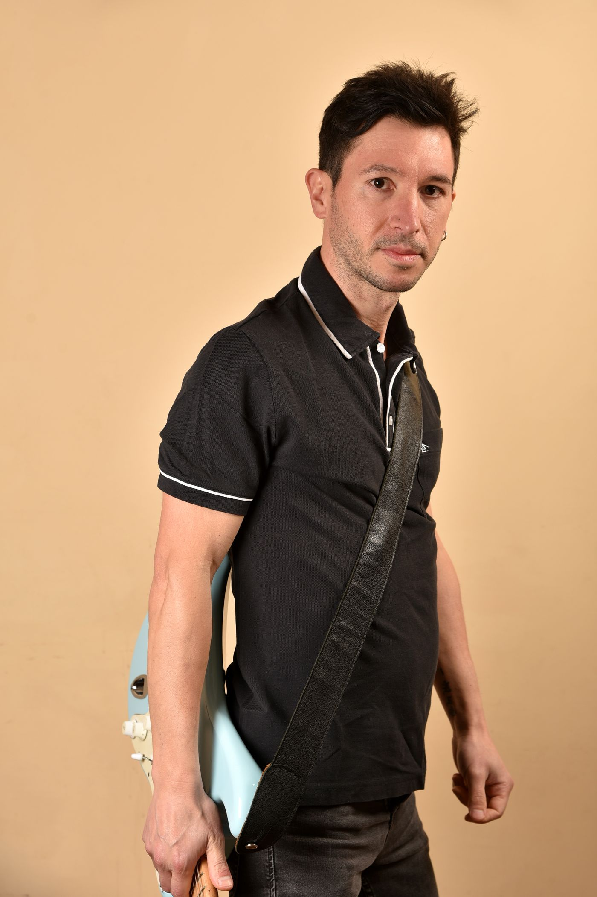
Equipos con los que ya trabajé
- Mercado Libre
- Accelium
- Securitas
- LifeRocks
- Taraborelli
- Real Planning
Academia · Para vos
Empezás tocando desde la primera clase.
Clases 1 a 1 para chicos, adolescentes, gente de oficina y CEOs.
- Guitarra
- Teclado
- Ukelele
- Bajo
- Dónde
- Presencial en Buenos Aires. Online para Argentina, Latinoamérica y España
- Horarios
- Lunes a sábado, de 9 a 20 h
Las muestras
Los alumnos terminan tocando en vivo.
Dale play: el ecualizador del fondo sigue lo que suena.
Experiencias musicales para equipos
Un equipo sin experiencia termina arriba de un escenario.
Nadie mira sentado y nadie tiene que saber tocar: el equipo arma una banda, ensaya y graba un tema.
Qué se hace exactamente
-
Una charla
Cuento cómo se aprende algo desde cero y lo demuestro ahí mismo, con los instrumentos en la sala.
-
Una jornada
Cada uno agarra un instrumento y, sin saber tocar, terminan haciendo un tema entre todos.
-
Una banda de verdad
Ensayan, graban el tema y lo tocan en vivo.
Y mientras tocan pasa lo que en un informe se llama liderazgo y trabajo en equipo:
- Se escuchan antes de hablar
- Se reparten quién hace qué
- Sostienen el tiempo del otro
- Aprenden sin buscar la perfección
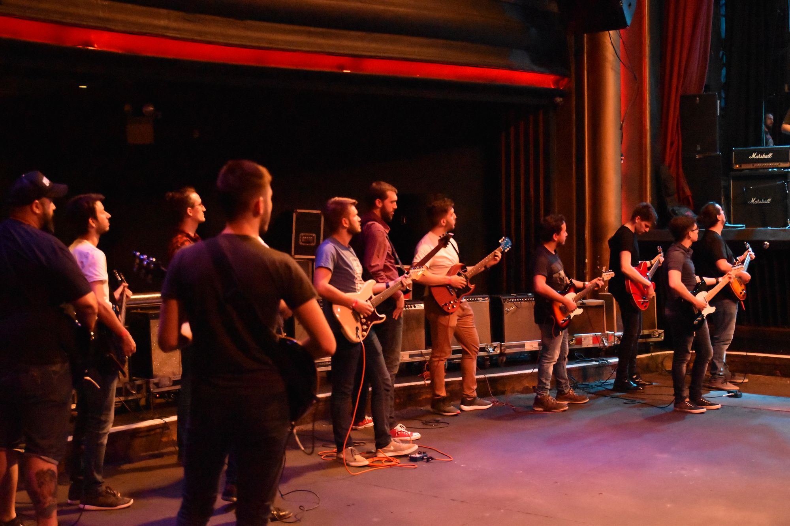
El caso más grande
Mercado Libre, desde 2019
Primero a nivel local y después regional, con un programa que adentro de la empresa se llama Rock It. Terminó en una banda que tocó en la fiesta de fin de año y en el teatro Vorterix.
160 empleados de toda la región, según El Cronista
En video
Material de Mercado Libre.
Otros equipos
-
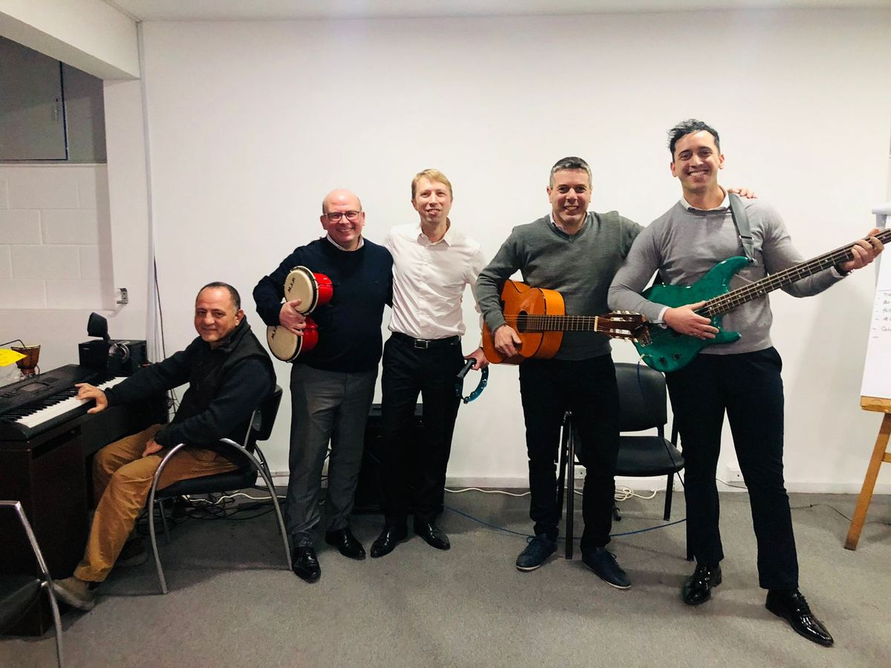
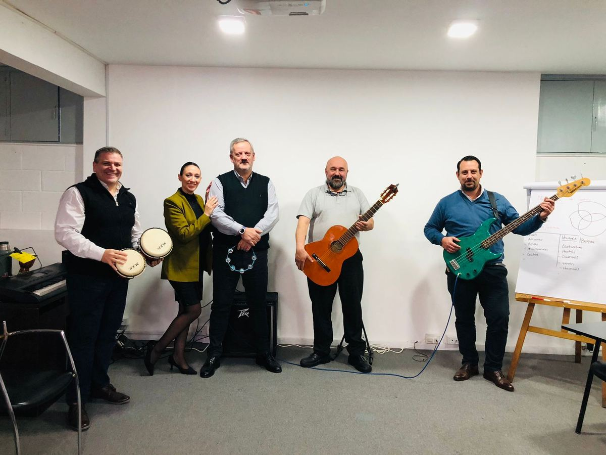
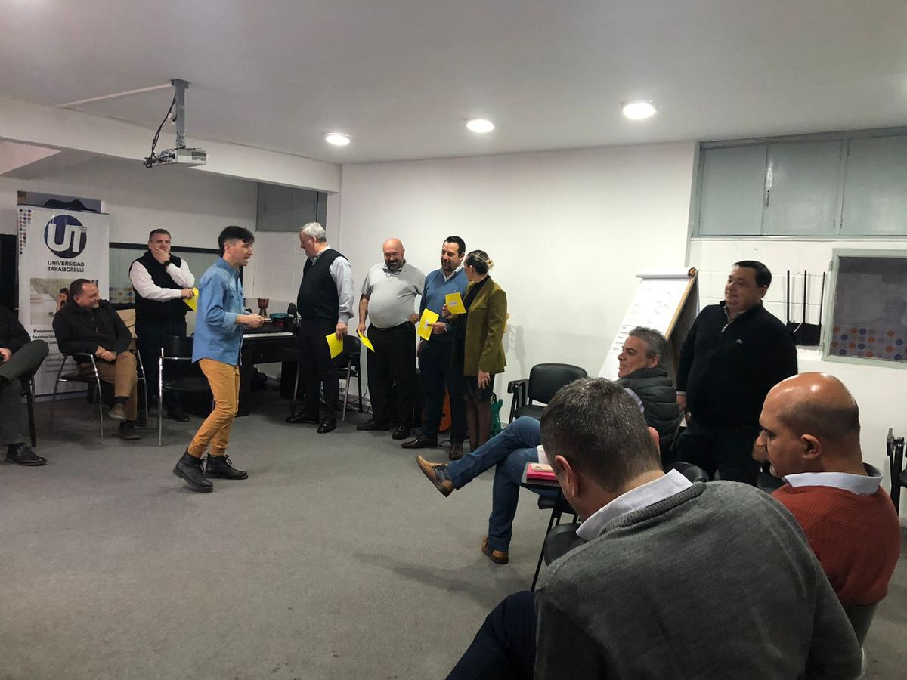
Taraborelli
Un equipo entero en una sala de reunión, sin escenario ni nada: guitarra criolla, bajo, teclado y percusión repartidos entre gente que llegó de traje.
-
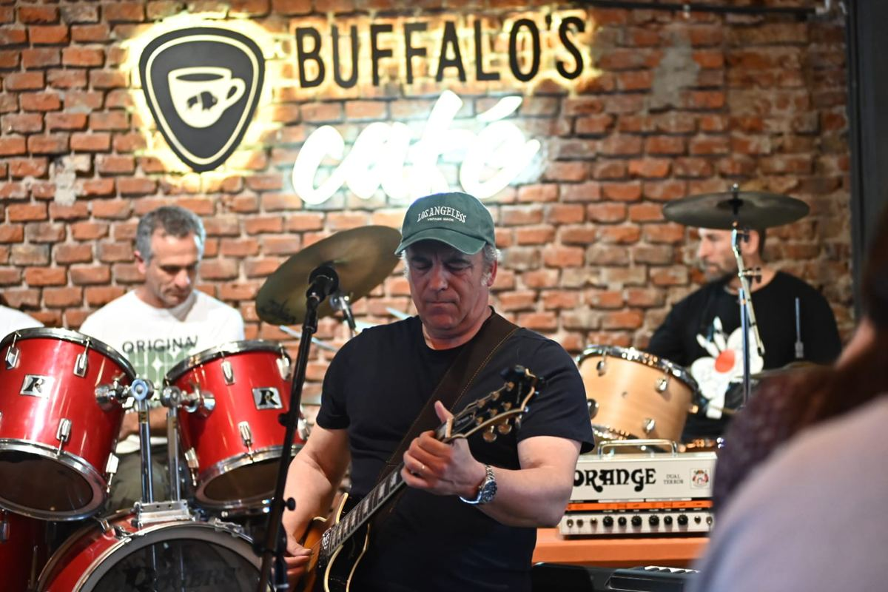
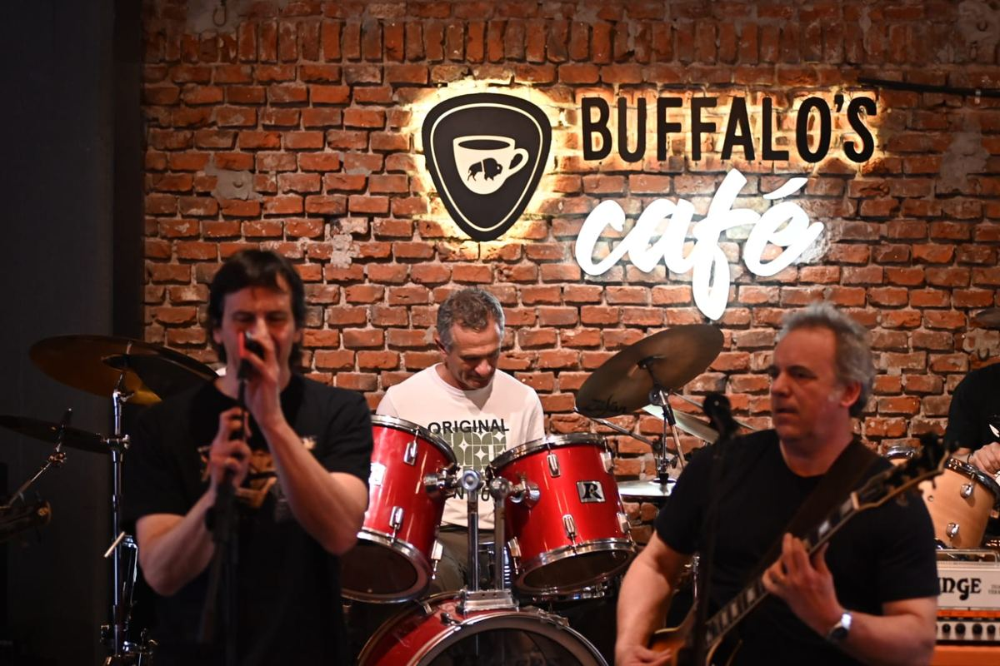
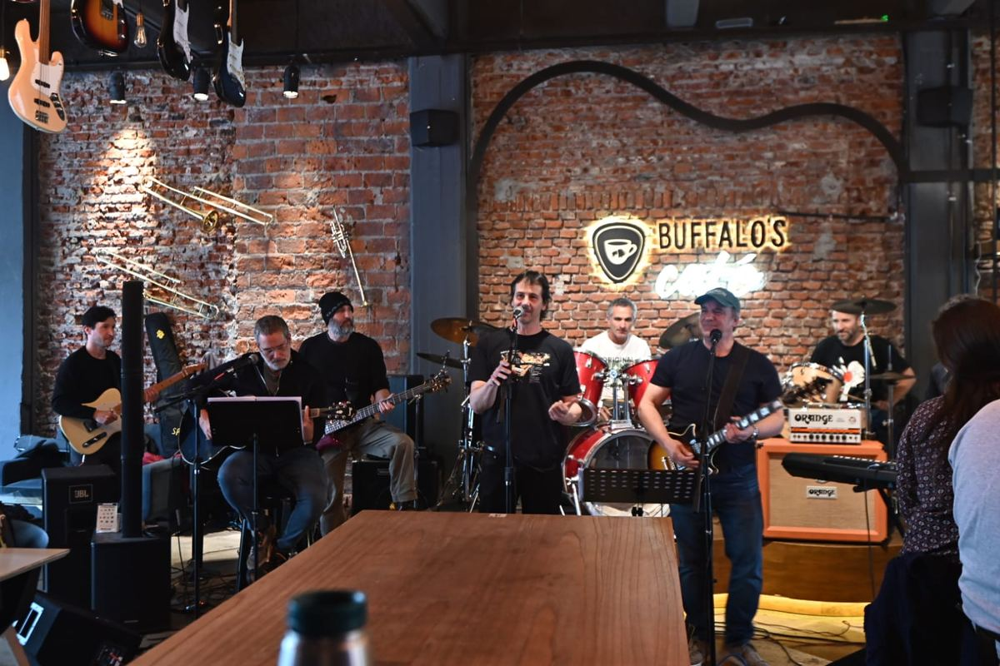
LifeRocks
En un bar, con batería, amplificadores y micrófono abierto. La jornada que menos se parece a una reunión de trabajo.
-
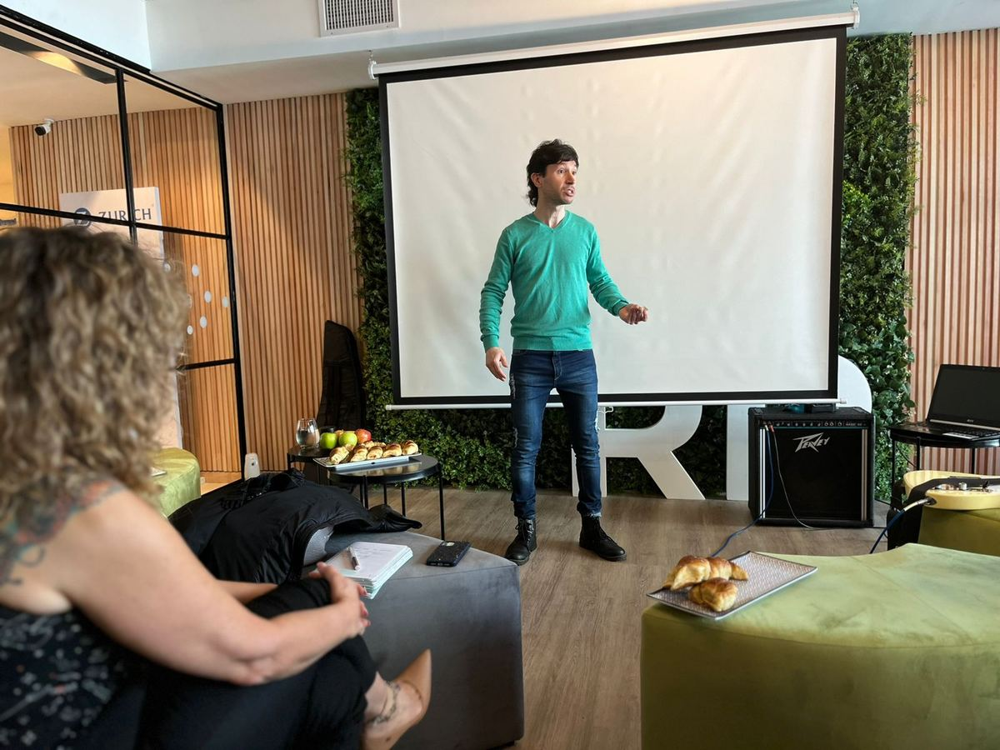
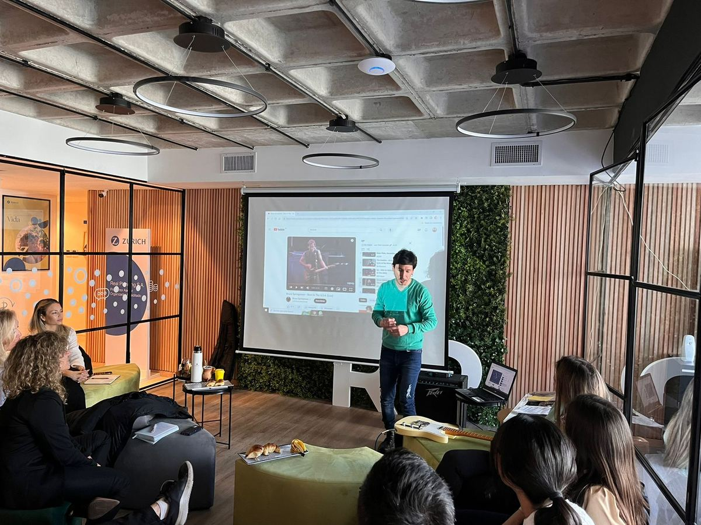
Real Planning
Seguros e inversiones. Acá el formato es el de charla: yo adelante, el equipo sentado, y los instrumentos esperando en la sala.
-
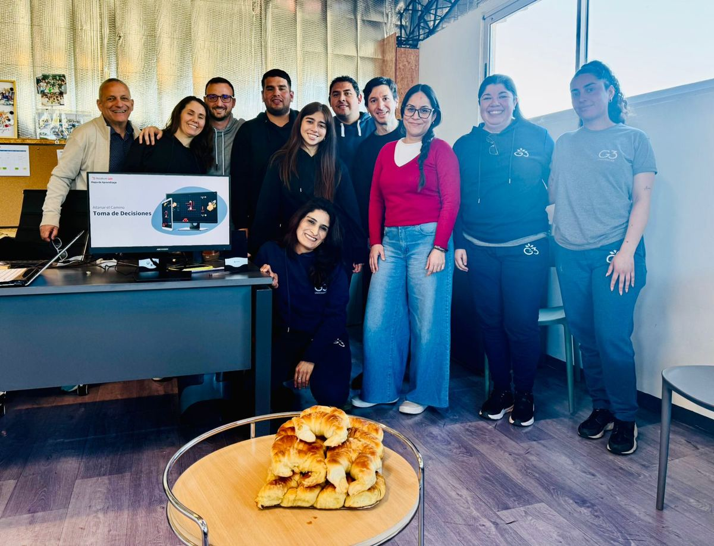
Accelium
El equipo, después de la actividad.
Sobre mí · lo contó La Nación
Empezó con una fractura.
En 2005 trabajaba en finanzas y corría quince kilómetros por día. Se fracturó el pie y tuvo que parar: eso lo cambió todo. Renunció.
Renuncié a todo lo hipotéticamente seguro: sueldo mensual, obra social, vacaciones.
Ya daba clases de música. Se dedicó a eso a tiempo completo y armó un método propio: tocar un instrumento para desarrollar liderazgo y habilidades humanas.
Lo contó La Nación en abril de 2021.
Lo que dicen
44 reseñas en Google. Mis alumnos no escriben que enseño bien guitarra: escriben que les cambié la confianza.
Gracias a Juan es que hoy puedo pararme enfrente de millones de personas y no se me va a mover un pelo. Más allá de la música, también me enseñó a confiar en mí.
Lejos, Juan Pablo es el mejor en su rubro. Mis 3 hijos son alumnos y es muy grato ver cómo disfrutan sus clases y sus avances.
Tiene una paciencia para explicarle todo a principiantes. Hace un año que arranqué en sus clases y la verdad me sirvieron un montón.